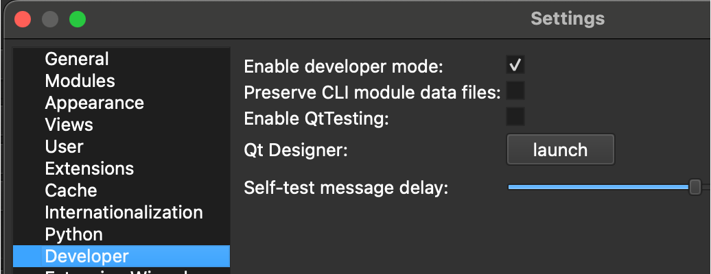
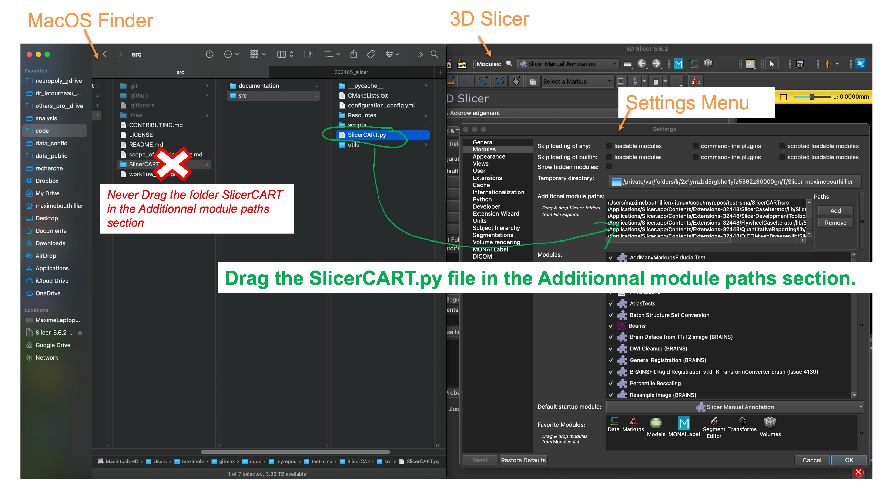
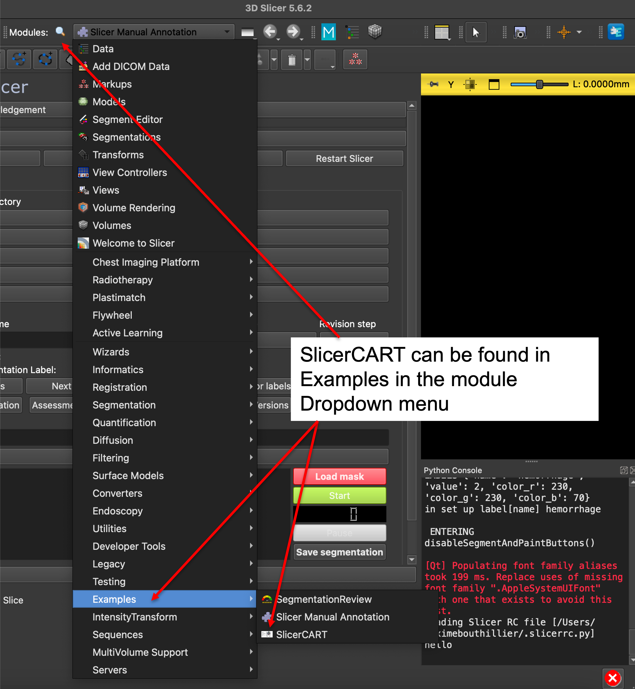

Installation
This guide will help you install SlicerCART and set up your environment.
Prerequisites
3D Slicer
SlicerCART is a module for 3D Slicer. You need to have 3D Slicer installed on your system:
Download 3D Slicer from the official website (version 5.8.1 on macOS is recommended)
Launch 3D Slicer to verify the installation
Installation
Get Access to SlicerCART repository
Download SlicerCART repository as a ZIP file, and extract the folder to your choice location
OR
Clone the repository to the location of your choice:
# Clone the repository git clone https://github.com/neuropoly/slicercart.git
Get Access to SlicerCART in 3D Slicer
Open 3D Slicer
Go to Edit -> Application Settings -> Developer. Check Enable developer mode
Go to Edit -> Application Settings -> Modules
Go to the location of the python file
<PATH_TO_REPOSITORY>/slicercart/SlicerCART/src/SlicerCART.pyDrag/Drop the file
SlicerCART.pyin the Additional module paths list.
Click “OK”. 3D Slicer will ask to Restart: click “Yes”.
Go to Modules Drop Down -> Examples -> SlicerCART
(Optional) Ensure SlicerCART is launched at 3D Slicer startup.
To do so, go to Edit -> Application Settings -> Modules -> Default startup module
{kind=link}
{kind=link}
{kind=link}
N.B. There might be errors in the Python Console: if so, it is highly recommended for you to fix them before any further use.
Verification
To verify that SlicerCART is installed correctly:
Launch 3D Slicer
Go to Modules dropdown menu
Look for “SlicerCART” in the list
Click on SlicerCART to open the module
The module interface should appear in the main panel
Troubleshooting
Common Issues
Module Not Found
Verify that 3D Slicer is properly installed
Check if the module path is correctly set
Try restarting 3D Slicer
Version Compatibility
Ensure you’re using a compatible version of 3D Slicer (e.g. 5.6.2)
Ensure you’re using a compatible operating system (e.g. mac OS)
Getting Help
If you encounter issues:
Check our GitHub Issues
Create a new issue with detailed information about your problem
Contact the development team